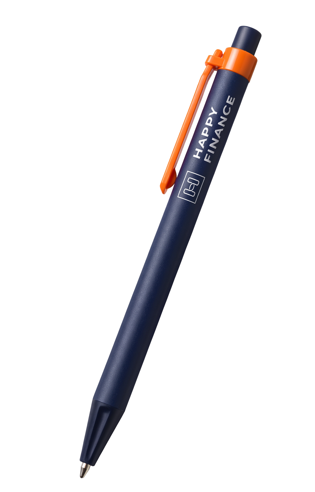

Бухгалтерський супровід ФОП і ТОВ
Рахуємо податки, здаємо звіти, вчасно нагадуємо, що й коли сплатити.
Фінансово-бухгалтерський супровід ФОП і ТОВ. Беремо на себе облік і звітність, а ви бачите реальні показники бізнесу та впевнено приймаєте рішення.
Ви приходите зі складним питанням, а йдете з планом: що робити, у якому порядку й що це дасть.
Раз на місяць простими словами: скільки ви заробили, на що пішли гроші й що з податками.
Марія керувала підприємствами в ресторанному бізнесі, виробництві й дистрибуції, тому радить із розумінням, як рішення вплине на ваш прибуток і команду.
Ви самі обираєте, як передавати документи: месенджер, пошта чи спільна папка. Ми налаштуємо так, щоб ви не шукали файли, а команда менше нагадувала й переписувалась.
Впізнаєте себе?
Коли облік у порядку, лист із податкової вас не лякає, а цифри бізнесу ви бачите щомісяця. Дізнайтесь, який формат супроводу вам підійде.
Підібрати пакет за 1 хвилинуСвої цифри ви бачите раз на рік, коли настає час здавати звіт.
Договір у Viber, рахунок у пошті, акт у папці на робочому столі, а потрібний файл ви довго шукаєте.
Бухгалтер здає звіти вчасно, а на питання «скільки я заробив цього місяця?» відповіді немає.
Приходить лист із податкової, і ви не певні, що в обліку все гаразд.
Послуги
Від першого документа до цифр про те, як іде ваш бізнес. Беріть лише те, що потрібно зараз, решту підключите пізніше.
Рахуємо податки, здаємо звіти, вчасно нагадуємо, що й коли сплатити.
Відкриваємо й закриваємо ФОП і ТОВ: підбираємо систему оподаткування, подаємо документи, знімаємо з обліку.
Оформлюємо співробітників, ведемо табелі, рахуємо зарплату й податки з неї.
Звіти про прибуток, рух грошей і баланс: ви розумієте, скільки заробили й куди пішли гроші.
Розбираємо, як у вас рухаються документи, і налаштовуємо так, щоб менше переписок і ручної роботи.
Запит від банку чи держоргану, незвична операція: допоможемо підготувати документи й відповідь.
Навіщо власнику облік
«Без цифр управління бізнесом — це не управління, а ілюзія.»
Як ми працюємо
Спочатку ми вивчаємо, як працює ваш бізнес, і лише потім налаштовуємо облік.
Ви розповідаєте, як працюєте зараз, ми дивимось документи й облік.
Ви отримуєте короткий список: що працює, що виправити, з чого почати.
Домовляємось, хто за що відповідає і що ви бачите щомісяця.
Ви знаєте, куди й у якому вигляді надсилати документи, а команда витрачає менше часу на рутину.
Щомісяця ви бачите, скільки заробили, і ухвалюєте рішення на основі даних.
Перерва на хвилину
Операції падають, ви розкладаєте їх: надходження, витрати чи податки. Так виглядає щоденна робота бухгалтера.
На комп’ютері: клавіші 1 2 3
Підібрати пакет
Дайте відповідь на 4 питання, і ви побачите, що входить у ваш супровід. Потім одним натиском надішлете нам готове повідомлення в Telegram.

Засновниця
Я почала з бухгалтерського обліку, потім керувала підприємствами й виводила їх із кризи. Тому дивлюся на цифри очима власника: що вони означають для прибутку і яке рішення за ними стоїть.
Команда
Кожен веде свою ділянку: документи, зарплату, звітність. Ви звертаєтесь в один канал і не шукаєте окремого бухгалтера для кожного питання. Працюємо у будні.
Веде облік від первинних документів до звітності. Досвід у торгівлі, будівництві та на посаді фінансового директора.
Веде щоденні операції: первинні документи та ПРРО. Ви надсилаєте документи, ми оформлюємо їх без пропусків.
Понад 20 років у бухгалтерії. Відповідає за нарахування зарплати та кадрові розрахунки.
Керувала відділом обліку первинних документів (13 людей у трьох філіях) і закупівлями. Допомагає навести лад у документах і поставках.
FAQ
Не знайшли свого питання? Напишіть у Telegram, відповімо в робочий час.
Написати в TelegramВи надаєте доступ до документів і звітності, ми перевіряємо, що передано, і погоджуємо дату старту. З цієї дати облік ведемо ми.
Перевіряємо ваш облік і складаємо список: що в порядку, що виправити й у якій черговості. Ви вирішуєте, що робити далі.
Ви отримуєте від нас готові документи й пояснення, а під час перевірки ми поруч. Якщо виникає спірне питання, пропонуємо варіанти, як його розв’язати.
Ви обираєте, як вам зручно: месенджер, пошта чи спільна папка. Ми фіксуємо порядок: що, коли й куди ви надсилаєте.
Ми працюємо у будні до 17:00. Повідомлення, що прийшли ввечері чи у вихідні, відповідаємо наступного робочого дня. Якщо щось термінове, домовляймось заздалегідь.
Вартість залежить від форми бізнесу, системи оподаткування, кількості операцій і працівників. Пройдіть підбір пакета за хвилину, і ви побачите, що входить у ваш супровід. Точну суму назвемо після короткої розмови.
Залиште телефон, і ми зв’яжемося з вами у робочий час. Можна одразу написати в Telegram.
Повний текст політики конфіденційності буде додано перед запуском сайту. Контакти, які ви залишаєте у формі, використовуються лише для зв’язку з вами.